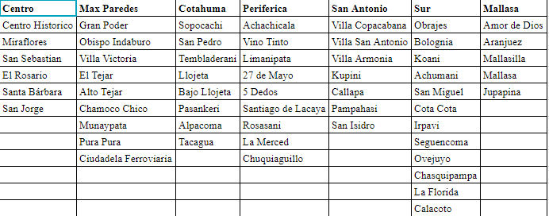
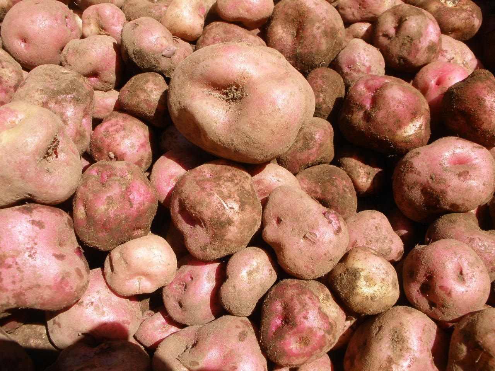
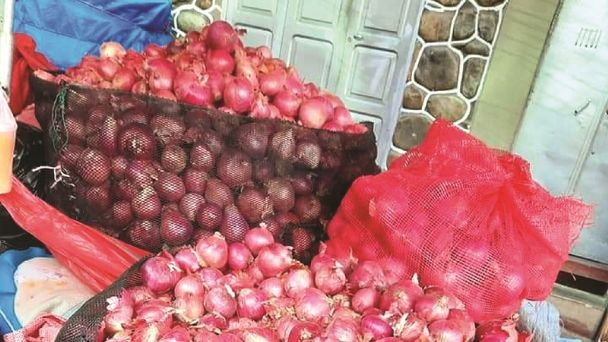
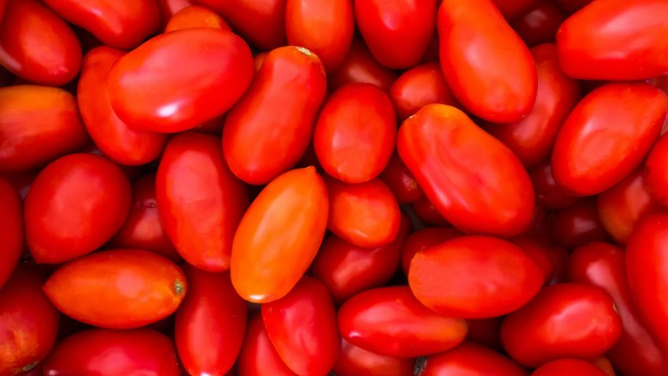
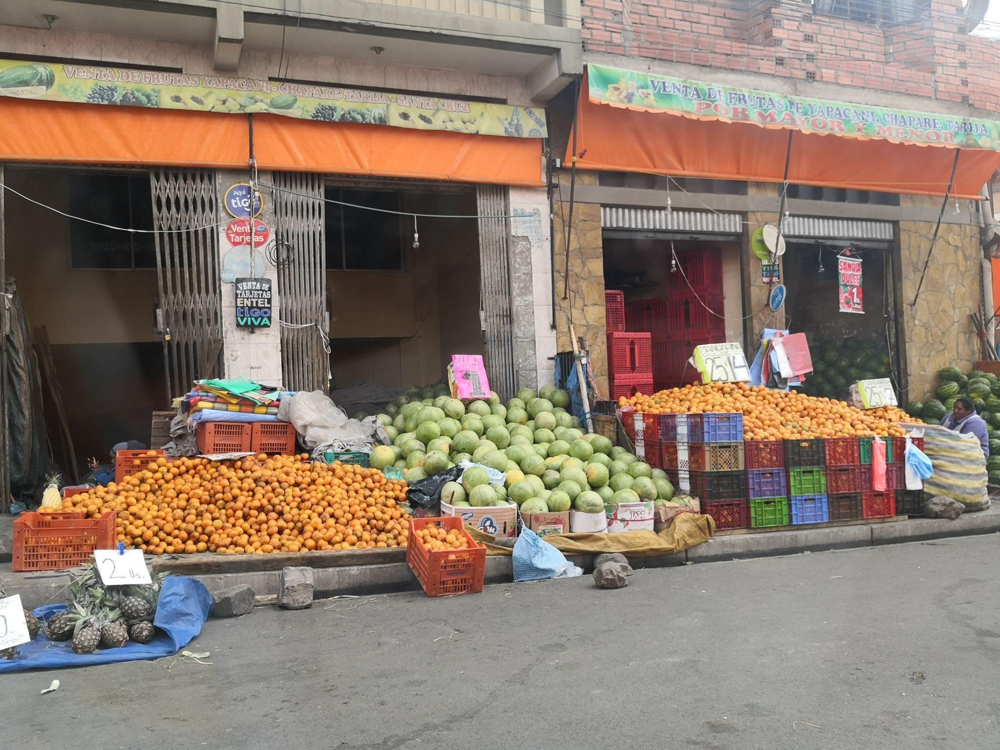
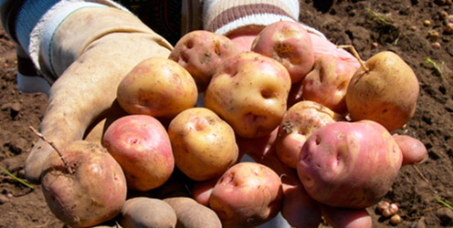
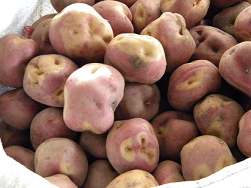
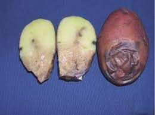
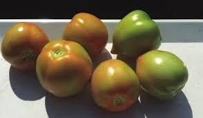
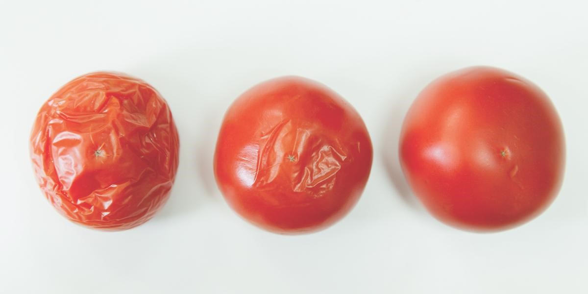

Encuesta al Consumidor
SECCION 0: Datos Localización Encuestador
Ciudad:
La Paz
Macrodistrito
Centro
Max Paredes
Seleccione la ubicación
Ubicación
Max Paredes
Centro
Mercado El Tejar
Mercado Miraflores
Mercado Portada
Mercado Yungas
Mercado Cancha El Tejar
Mercado Camacho
Mercado San José de Munaypata
Supermercado Ketal (Villalobos)
Mercado Santiago de Munaypata
Feria Calle República
Feria Calle Lima
Nombre Encuestador
INTRODUCCION
Hola, buenos días/tardes. Soy un estudiante universitario de la
Universidad Mayor de San Andrés.
Estamos desarrollando una encuesta relacionada al consumo de frutas y verduras y por qué la clientela las prefiere. Este proyecto tiene el objetivo de ayudar en el acceso de productos nutritivos al consumidor final¿Podría regalarme 5 minutos de su tiempo por favor?
Hacer una pausa mientras la persona decide. Si él/ella no expresa verbal o físicamente estar de acuerdo inmediatamente o pregunta: ¿qué es lo que necesitas/quieres?, rápidamente responde:
Le haré algunas preguntas sobre los productos que ofrece, la cantidad que ofrece, la frecuencia con que le piden ciertos productos junto con la preferencia de sus clientes. En esta encuesta no le pediremos nombre ni firma y toda la información que nos brinde será completamente confidencial. Además usted puede interrumpir la encuesta si en algún momento tiene preguntas. ¿Cómo ve? ¿Se anima a apoyar con su punto de vista a todos los que tienen tiendas de barrio?
Si la persona no se ha negado a empezar la encuesta hasta este punto, iniciamos con la encuesta. En caso contrario, menciona:
¡Por favor! Es por una buena causa, queremos que los mercados sigan prosperando a pesar de la gran competencia que para ellas representan otras opciones de compra. Por favor serán sólo 5 minutos.
Si la persona no ha dicho no, empieza la encuesta.
Si la persona se niega nuevamente, agradécele y deséale buen día.
SECCION I: Canal de Abastecimiento

Nota
Observe la tabla anterior para poder seleccionar el macrodistrito donde vive.
1. ¿De qué zona ud. viene (Si no identifica el Macrodistrito, mostrar la tabla con las zonas de referencia)
Cotahuma
Max Paredes
Periférica
San Antonio
Sur
Mallasa
Centro
Otro:
2. Canal de abastecimiento de su preferencia para frutas y verduras
Nota
Canal hace referencia al lugar donde compra sus frutas y verduras. En caso de acudir a otro mercado que no se encuentre en las opciones marcar la opción otro.
Mercado Mayorista El Tejar
Mercado Minoristas (Ejem.Mercado Uruguay, Mercado Miraflores, Mercado Villa Fátima, Mercado Yungas)
Ferias Barriales (Ferias que solo ocurren 1 ó 2 veces por semana)
Tienda de Barrio
Supermercados
Otro:
3. Seleccione los productos que adquiere en su lugar de compra preferido
Papa
Cebolla roja
Tomate
Banana
Manzana roja
SECCION II: Nivel Socioeconómico
1. La persona que toma las decisiones de compra de frutas y verduras en su hogar es:
Mujer
Varón
2. La edad de la persona que toma las decisiones de compra para la compra de frutas y verduras oscila entre el rango:
19-27 años
28-36 años
36-50 años
51-65 años
>65 años
3. La persona que toma las decisiones de compra lo hace usualmente para alimentar a:
1 persona
2 personas
3 personas
4 personas
Más de 4 personas
4. ¿Cuántas comidas al día consume su familia?
1 vez al dia
2 veces al dia
3 veces al dia
Más de 3 veces
5. Piense en sus compras y divida el 100% en los siguientes canales de distribucion:
Nota
Recuerde que la sumatoria debe dar un 100%, solo puede ingresar numeros y debe llenar todos los campos.
Mercado Mayorista El Tejar
Mercado Minoristas (Ejem.Mercado Uruguay, Mercado Miraflores, Mercado Villa Fátima, Mercado Yungas)
Ferias Barriales (Ferias que solo ocurren 1 ó 2 veces por semana)
Tienda de Barrio
Supermercados
Otro:
Total:
IMPORTANTE
SECCION III: Características logísticas de Papa, Cebolla y Tomate
Productos Seleccionados
En esta encuesta se toma en cuenta,los siguientes productos de referencia.



Papa
Cebolla roja
Tomate tipo pera
1. Encuentra Papa, Cebolla y Tomate en el mismo mercado de su preferencia
Si
No
2. ¿Cuántas veces a la semana acude al lugar de compra de su preferencia para comprar...
...papa?
...cebolla?
...Tomate?
Diariamente
1 vez a la semana
2 veces a la semana
3 veces a la semana
1 vez al mes
3. ¿Cuál es la distancia a su lugar de preferencia para comprar...
...papa?
...cebolla?
...Tomate?
Menor a 2 cuadras
2 - 5 cuadras
6-8 cuadras
Mayor a 8 cuadras
4. ¿Qué cantidad de papa compra usualmente?
Menor a 1/4 arroba
1/4 arroba
½ arroba
1 arroba
Mayor a 1 arroba
Otro:
5. ¿Qué cantidad de cebolla compra usualmente?
Menor a 1/4 arroba
1/4 arroba
½ arroba
1 arroba
Mayor a 1 arroba
Otro:
6. ¿Qué cantidad de tomate compra usualmente?
1 lb
2 lb
3 lb
Mayor a 2 lb
Otro:
SECCION IV: Características logísticas de Banana y Manzana
Productos Seleccionados
En esta encuesta se toma en cuenta,los siguientes productos de referencia.
Banana
Manzana roja
1. Encuentra Banana y Manzana en el mismo mercado de su preferencia
Si
No
2. ¿Cuántas veces a la semana acude al lugar de compra de su preferencia para comprar...
...banana?
...manzana?
Diariamente
1 vez a la semana
2 veces a la semana
3 veces a la semana
1 vez al mes
3. ¿Cuál es la distancia a su lugar de preferencia para comprar...
...banana?
...manzana?
Menor a 2 cuadras
2 - 5 cuadras
6-8 cuadras
Mayor a 8 cuadras
4. ¿Cuánto compra usualmente de banana?
Dos manos de banana (50 unidades)
Una mano de banana (25 unidades)
Mitad de una mano de banana (12 unidades)
Menos de 12 unidades
Otro:
5. ¿Cuánto compra usualmente de manzana roja?
Una caja de manzana
Media Caja de manzana
Monton de 4 u x 10 Bs
Monton de 5 u x 10 Bs
Montón de 6 u x 10 Bs
Otro:
SECCION V: Factores que influyen en la compra de frutas y verduras
1. ¿Cuán importante es para usted la CERCANÍA a la hora de escoger su lugar de compra?
Nada importante
Poco importante
Neutral
Muy importante
Totalmente importante
2. ¿Cuán importante es para usted el PRECIO de los productos, a la hora de escoger su lugar de compra?
Nada importante
Poco importante
Neutral
Muy importante
Totalmente importante
3. En el momento de realizar su compra de frutas y verduras. El lugar de venta es generalmente un/una ...

Asentamiento (Minorista, Feria u otro) (Tamaño: 1 m2 o Menor a 1 m2)
Tarima (Minorista, Feria u otro)(Tamaño: 1 m2 - 2 m2)
Almacén (Mayorista, minorista)(Tamaño: Mayor a 2 m2)
4. En el momento de comprar papa, ¿En qué condiciones compra el producto?



Color rojizo con raíces
Color rojizo con ojos amarillo
Color amarillo con ojos profundos y aspecto arrugado
5. En el momento de comprar cebolla, ¿En qué condiciones compra el producto?
Ovalado con salida del tallo verdoso
Ovalado rosado con salida del tallo seco
Ovalado rosado, opaco con raíces crecidas
6. En el momento de comprar tomate, ¿En qué condiciones compra el producto?


Ovalado color rojizo con tonalidades verdes
Ovalado color rojizo
Ovalado color amarillo rojizo y con arrugas
7. En el momento de comprar banana, ¿En qué condiciones compra el producto?
Muy inmaduro de color verde
Inmaduro de color amarillo con verde
Maduro de color amarillo si ninguna peca
Maduro con un color amarillento con algunas pecas
Muy maduro con manchas negras en el cuerpo
8. En el momento de comprar manzana roja, ¿En qué condiciones compra el producto?
Inmadura de color verde
Inmaduro de color rojo con verde
Maduro de color rojizo
Maduro de color rojizo con pocos tonos de amarillo
Muy maduro con tonalidades de rojo y amarillo
SECCION VI: Decisiones de Compra
1. Cuando llega al mercado (punto de venta) de su preferencia ¿ya sabe qué va a comprar?
Nunca
Rara vez
A veces
Frecuentemente
Siempre
2. Cuando llega al mercado (punto de venta) de su preferencia ¿ya sabe a quién va a comprar?
Nunca
Rara vez
A veces
Frecuentemente
Siempre
3. Cuando su lugar habitual de compra de papa, cebolla y tomate no se encuentra disponible ¿A qué otro lugar acude?
Mercado Mayorista El Tejar
Mercado Minoristas (Ejem.Mercado Uruguay, Mercado Miraflores, Mercado Villa Fátima, Mercado Yungas)
Ferias Barriales (Ferias que solo ocurren 1 o 2 veces por semana)
Tienda de Barrio
Supermercados
No compro en otro lugar
Otro:
4. Cuando su lugar habitual de compra de banana y manzana no se encuentra disponible ¿A qué otro lugar acude?
Mercado Mayorista El Tejar
Mercado Minoristas (Ejem.Mercado Uruguay, Mercado Miraflores, Mercado Villa Fátima, Mercado Yungas)
Ferias Barriales (Ferias que solo ocurren 1 o 2 veces por semana)
Tienda de Barrio
Supermercados
No compro en otro lugar
Otro:
5. ¿Le gustaría adquirir estos productos en su tienda de barrio más cercana?
Si
No
6. Actualmente, ¿Por qué no compra en una tienda de barrio los productos mencionados?
Los productos son mas caros
No venden los productos en la tienda
Los productos no son frescos o estan muy guardados
Otro:
MUCHAS GRACIAS POR LLENAR LA ENCUESTA!
Por favor, no te olvides llenar la fecha y hora del registro.
Fecha de Registro:
Hora de Registro:
Dirección de la persona encuestada (Opcional)